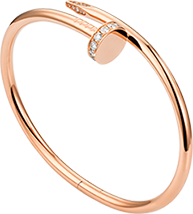
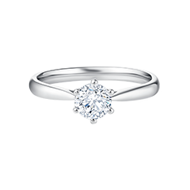
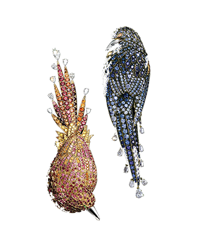
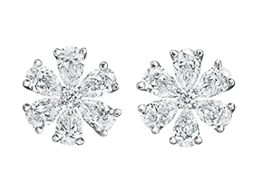
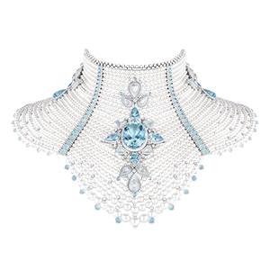

Views |
 |
Juste un Clou手镯
18K玫瑰金，镶嵌32颗圆形明亮式切割钻石，总重0.59克拉。卡地亚将五金零件幻化为珠宝臻品。首款钉子手镯诞生于二十世纪七十年代的纽约，充分展现自由欢愉的时代精神。Juste un Clou系列独具创意，大胆而现代，将平凡物件得以非凡升华，彰显珍贵本质，成为男士或女士的极佳配饰。更多...... |
 |
DR钻戒Forever系列：经典款
传统六爪镶嵌订婚钻戒开启了钻戒求婚传统，Forever系列寓意任时光流逝，唯爱永固;祈岁月静好，唯爱永恒!Forever系列为DR沿袭经典之作。更多...... |
 |
TIFFANY&CO.鸟形胸针
这款设计采用 18K 金材质，多彩的闪亮宝石令这只奇异鸟的动人色彩栩栩如生，这些闪亮宝石轻松地模仿出精致羽毛的灵动及亮点。圆形红色尖晶石；圆形粉色尖晶石；圆形锰铝榴石；圆形黄色蓝宝石；梨形钻石；榄尖形沙弗莱石。更多...... |
 |
勿忘我Forget-Me-Not钻石耳环
这款设计优雅迷人的钻石耳环自大自然中清隽秀逸的花卉汲取灵感，绽放熠熠光华。12颗水滴型钻石簇拥着2颗圆形明亮式切工钻石，总重1.71克拉，悉心镶嵌于铂金底座，为您在任何场合增添粲然风采。此款精致瑰丽的作品沿袭海瑞温斯顿悠久的高级珠宝传统，礼赞大自然的瑰美馈赠，尽展稀世钻石的天然美态。更多...... |
 |
Hiver Impérial项链
Boucheron宝诗龙以遥远北方之国的漫漫雪原为灵感，推出全新Hiver Impérial高级珠宝系列。品牌历史与俄罗斯帝国及其斯拉夫文化与广阔地域有着密切关系，宝诗龙全新诠释这一国度的三大主题——大自然、时装与建筑。更多...... |